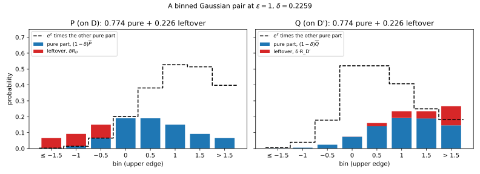
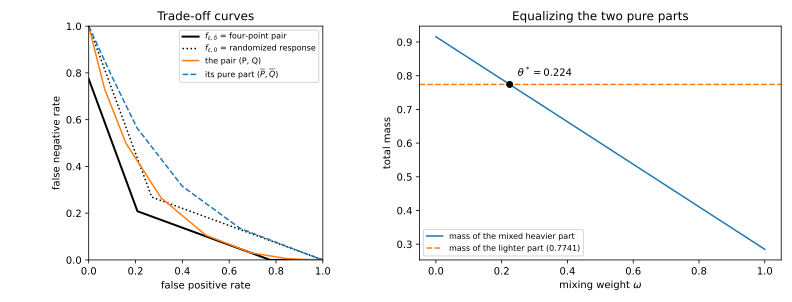
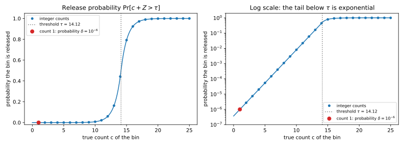
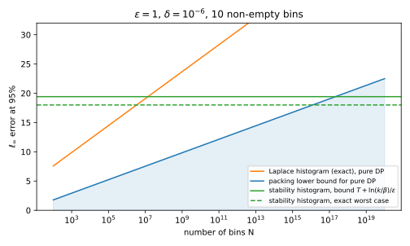
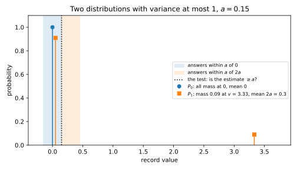
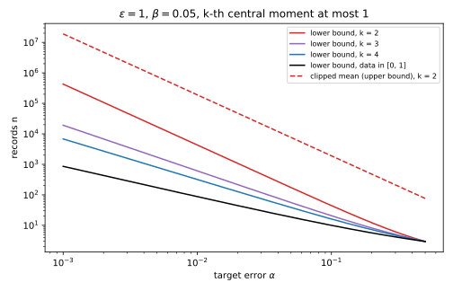
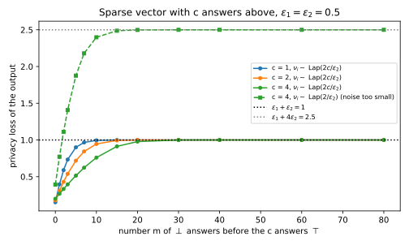
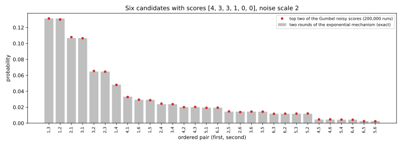
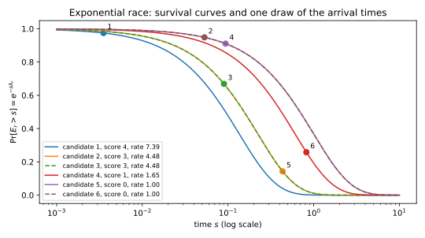

Appendix J — Mechanisms and their limits
This appendix proves seven results that the chapters on differential privacy (DP) state about specific mechanisms but do not derive in full. Three of them are about what the slack \(\delta\) of approximate DP means. The first shows that every \((\varepsilon, \delta)\)-DP pair of output distributions splits into an \(\varepsilon\)-DP pair and a leftover of mass \(\delta\), and so is a post-processing of the worst \((\varepsilon, \delta)\)-DP pair, called four-point randomized response. The second uses the same split to show that \((\varepsilon, \delta)\)-DP implies an approximate form of zero-concentrated differential privacy (zCDP). The third, the stability-based histogram, shows what the slack buys: an error that does not grow with the number of bins. The other four results pin down single mechanisms. One is a lower bound for estimating means of heavy-tailed data. Two are privacy proofs for selection: the sparse vector technique with several answers above the threshold, and Gumbel top-\(c\) selection. The last is a check that the “alarm” mechanism, which the group-privacy chapter uses to show its bound is tight, really is \((\varepsilon, \delta)\)-DP.
The derivations share one habit. Each proof fixes a neighbouring pair, writes down the two output distributions, and then compares them directly: it splits them into parts, changes variables in the noise, or bounds them one outcome at a time. Table J.1 maps each derivation to the chapter section that states or uses it.
| Derivation | Where the chapter states or uses it |
|---|---|
| Every \((\varepsilon, \delta)\) pair is post-processed four-point randomized response | Section 21.4 (Table 21.3, Equation 21.15), Section 21.5 |
| \((\varepsilon, \delta)\)-DP implies \(\delta\)-approximate \((\varepsilon^2/2)\)-zCDP | Section 31.7 |
| The stability-based histogram | Section 27.1, Section 28.3 |
| A lower bound for heavy-tailed means | Section 28.5 |
| Sparse vector with \(c\) answers above | Section 22.6 |
| Gumbel top-\(c\) is the exponential mechanism without replacement | Section 22.5 |
| The alarm mechanism is \((\varepsilon, \delta)\)-DP | Section 19.2 |
J.1 Every approximate-DP pair is post-processed four-point randomized response
J.1.1 What the chapter uses
Take a mechanism that is \((\varepsilon, \delta)\)-DP, fix two neighbouring datasets \(D\) and \(D'\), and write \(P\) and \(Q\) for the distributions of its output on them. For now the outputs are discrete, with probabilities \(p(y)\) and \(q(y)\) at an output \(y\); the last part of this section extends the argument to densities. Approximate DP says that the hockey-stick divergence is at most \(\delta\) in both directions. That divergence is the mass of one distribution that sticks out above \(e^\varepsilon\) times the other, as in Equation 18.13, so \[E_{e^\varepsilon}(P\|Q) = \sum_y\big(p(y) - e^\varepsilon q(y)\big)_+ \le \delta, \qquad E_{e^\varepsilon}(Q\|P) = \sum_y\big(q(y) - e^\varepsilon p(y)\big)_+ \le \delta. \tag{J.1}\] Here the positive part \((x)_+\) equals \(x\) when \(x\) is positive and 0 otherwise.
The four-point pair \((P^\star, Q^\star)\) of Table 21.3 is the worst such pair, in the sense that every test tells it apart as well as \((\varepsilon, \delta)\)-DP allows. It has four outputs: “flag \(D\)”, 0, 1 and “flag \(D'\)”. With probability \(\delta\) it announces the dataset, by “flag \(D\)” on \(D\) or “flag \(D'\)” on \(D'\). Otherwise it runs randomized response at level \(\varepsilon\), which reports 0 with probability \(t = e^\varepsilon/(1 + e^\varepsilon)\) on \(D\) and \(1 - t\) on \(D'\), and reports 1 otherwise. So \(P^\star\) gives the four outputs the probabilities \(\delta\), \((1 - \delta)t\), \((1 - \delta)(1 - t)\) and 0, and \(Q^\star\) gives them 0, \((1 - \delta)(1 - t)\), \((1 - \delta)t\) and \(\delta\). A channel \(K\) is a table of probabilities \(K(y \mid z)\) that turns an input \(z\) into an output \(y\). The claim is that some channel produces the pair \((P, Q)\) from the four-point pair: \[p(y) = \sum_z P^\star(z)K(y \mid z), \qquad q(y) = \sum_z Q^\star(z)K(y \mid z) \qquad\text{for every output } y. \tag{J.2}\] The composition chapter derives the channel for \(\delta = 0\) (Equation 21.12). For \(\delta > 0\) it explains why a channel must exist, through Blackwell’s theorem (a pair that is at least as hard to test as another at every level is a post-processing of it), and cites Kairouz, Oh & Viswanath (2015) for its construction. Optimal composition Equation 21.15, advanced composition with \(\delta > 0\), and basic composition with \(\delta > 0\) in Section 21.5 all rest on this channel.
J.1.2 The idea
Split each distribution into two parts. The two pure parts, one inside \(P\) and one inside \(Q\), are chosen so that at every output each is at most \(e^\varepsilon\) times the other. The leftover of each distribution is everything else, and the split is arranged so that it has mass exactly \(\delta\). The pure parts then form an \(\varepsilon\)-DP pair, so the chapter’s \(\delta = 0\) channel produces them from plain randomized response. The leftovers are what the flags are for: the channel turns “flag \(D\)” into a draw from \(P\)’s leftover, and “flag \(D'\)” into a draw from \(Q\)’s.
The only care needed is in the masses. The four-point pair gives each side exactly \(1 - \delta\) of plain randomized response, so the two pure parts must both have mass exactly \(1 - \delta\). The obvious pure parts, \(\min\{p, e^\varepsilon q\}\) and \(\min\{q, e^\varepsilon p\}\), can have different masses. So the proof first moves the heavier one down to the lighter one’s mass, by mixing in a scaled copy of the other one so that the factor \(e^\varepsilon\) survives, and then scales both down to \(1 - \delta\).
A small case shows every step. Take three outputs with \(P = (0.6, 0.3, 0.1)\), \(Q = (0.2, 0.3, 0.5)\) and \(e^\varepsilon = 2\). The mass of \(P\) above \(2Q\) is \(0.6 - 0.4 = 0.2\), and the mass of \(Q\) above \(2P\) is \(0.5 - 0.2 = 0.3\), so the pair is \((\ln 2, 0.3)\)-DP, with \(\delta\) the larger of the two. Table J.2 follows the construction.
| Output 1 | Output 2 | Output 3 | Total | |
|---|---|---|---|---|
| \(p\) | 0.6 | 0.3 | 0.1 | 1 |
| \(q\) | 0.2 | 0.3 | 0.5 | 1 |
| \(m_P = \min\{p, 2q\}\) | 0.4 | 0.3 | 0.1 | \(A = 0.8\) |
| \(m_Q = \min\{q, 2p\}\) | 0.2 | 0.3 | 0.2 | \(B = 0.7\) |
| \(\hat m_P\), the heavier part moved down to mass \(B\) | \(1/3\) | \(4/15\) | \(1/10\) | 0.7 |
| \(\hat m_Q = m_Q\) | 0.2 | 0.3 | 0.2 | 0.7 |
| \(R_D = (p - \hat m_P)/0.3\) | \(8/9\) | \(1/9\) | 0 | 1 |
| \(R_{D'} = (q - \hat m_Q)/0.3\) | 0 | 0 | 1 | 1 |
The rows \(m_P\) and \(m_Q\) are the first guesses for the pure parts, with masses \(A\) and \(B\). The heavier one, \(m_P\), is moved down by step 4 of the derivation below: it is mixed with \(m_Q/e^\varepsilon = m_Q/2\), with weight \(\omega^* = \frac29\) on \(m_Q/2\), chosen so that the mass falls to \(B\). So on output 1 the row \(\hat m_P\) is \(\frac79 \times 0.4 + \frac29 \times 0.1 = \frac13\). The lighter mass \(B = 0.7\) is already \(1 - \delta\), so no further scaling is needed, and both pure parts end with mass \(0.7\). They also stay within a factor 2 of each other on every output, because the ratios \(\hat m_P/\hat m_Q\) are \(\frac53\), \(\frac89\) and \(\frac12\). What is left over has mass \(0.3\) on each side, so dividing it by \(\delta = 0.3\) gives two distributions. The section’s checks below confirm that the channel built from these rows gives back \(P\) and \(Q\) exactly.
J.1.3 Derivation
Assume \(0 < \delta < 1\) and \(\varepsilon > 0\). Write \(\gamma = e^\varepsilon\) to keep the formulas short.
- Pure parts. Define, for every output \(y\), \[m_P(y) = \min\{p(y), \gamma q(y)\}, \qquad m_Q(y) = \min\{q(y), \gamma p(y)\}. \tag{J.3}\] Each is non-negative and at most its own distribution, \(m_P \le p\) and \(m_Q \le q\).
- They are within a factor \(\gamma\). The claim is \(m_P \le \gamma m_Q\) at every output. The minimum \(m_P\) is at most \(\gamma q\) by definition. To compare it with \(\gamma m_Q = \min\{\gamma q, \gamma \cdot \gamma p\}\), note that it is also at most \(p\), which is at most \(\gamma^2 p\) because \(\gamma \ge 1\). So \(m_P\) is at most both \(\gamma q\) and \(\gamma \cdot \gamma p\), and hence at most \(\gamma\) times the smaller one, which is \(\gamma m_Q\). Swapping the roles gives \(m_Q \le \gamma m_P\).
- Their masses. At each output, \(p - \min\{p, \gamma q\} = (p - \gamma q)_+\): either the minimum is \(p\) and both sides are 0, or the minimum is \(\gamma q < p\) and both sides are \(p - \gamma q\). Summing over outputs, the mass of \(m_P\) is \[A = \sum_y m_P(y) = 1 - E_\gamma(P\|Q) \ge 1 - \delta, \tag{J.4}\] and in the same way the mass of \(m_Q\) is \(B = 1 - E_\gamma(Q\|P) \ge 1 - \delta\).
- Move the heavier part down. Say \(A \ge B\); otherwise swap the names \(P\) and \(Q\). For a weight \(\omega\) between 0 and 1, mix \(m_P\) with the scaled-down \(\gamma^{-1}m_Q\): \[m_P^\omega = (1 - \omega)\,m_P + \omega\,\gamma^{-1}m_Q. \tag{J.5}\] Three properties hold for every \(\omega\), because each holds for both pieces of the mix, and a mix of two numbers lies between them. First, the mix fits inside \(p\): \(m_P \le p\) by step 1, and \(\gamma^{-1}m_Q \le \gamma^{-1}\gamma p = p\) because \(m_Q \le \gamma p\). Second, it is at most \(\gamma m_Q\): \(m_P \le \gamma m_Q\) by step 2, and \(\gamma^{-1}m_Q \le \gamma m_Q\) because \(\gamma \ge 1\). Third, it is at least \(\gamma^{-1}m_Q\), which is the reverse bound \(m_Q \le \gamma m_P^\omega\). This holds because step 2 gives \(m_Q \le \gamma m_P\), that is \(m_P \ge \gamma^{-1}m_Q\), and the second piece equals \(\gamma^{-1}m_Q\). The mass of the mix is \((1 - \omega)A + \omega\gamma^{-1}B\). It falls in a straight line from \(A\) at \(\omega = 0\) to \(\gamma^{-1}B\) at \(\omega = 1\), and \(\gamma^{-1}B \le B \le A\). So it passes through \(B\), at \[\omega^* = \frac{A - B}{A - \gamma^{-1}B} \tag{J.6}\] (and \(\omega^* = 0\) when \(A = B\)). Now \(m_P^{\omega^*}\) and \(m_Q\) both have mass \(B\).
- Scale both to mass \(1 - \delta\). Multiply both by \((1 - \delta)/B\), which is at most 1 by step 3: \[\hat m_P = \frac{1 - \delta}{B}\,m_P^{\omega^*}, \qquad \hat m_Q = \frac{1 - \delta}{B}\,m_Q. \tag{J.7}\] Scaling both by the same factor keeps the ratio bounds of step 4 between \(m_P^{\omega^*}\) and \(m_Q\), and scaling down keeps \(\hat m_P \le p\) and \(\hat m_Q \le q\). Dividing by \(1 - \delta\) then gives two distributions, \[\bar P = \frac{\hat m_P}{1 - \delta}, \qquad \bar Q = \frac{\hat m_Q}{1 - \delta}, \tag{J.8}\] with \(\bar P(y) \le \gamma\bar Q(y)\) and \(\bar Q(y) \le \gamma\bar P(y)\) at every output. So \((\bar P, \bar Q)\) is an \(\varepsilon\)-DP pair.
- The leftovers are distributions. Define the leftovers \(R_D = (p - \hat m_P)/\delta\) and \(R_{D'} = (q - \hat m_Q)/\delta\). Each is non-negative because of step 5, and each sums to \((1 - (1 - \delta))/\delta = 1\), so each is a distribution. Rearranging the definitions gives the split \[P = (1 - \delta)\bar P + \delta R_D, \qquad Q = (1 - \delta)\bar Q + \delta R_{D'}. \tag{J.9}\]
- The channel. The channel sends “flag \(D\)” to \(R_D\) and “flag \(D'\)” to \(R_{D'}\). It sends the reports 0 and 1 to the two rows of the \(\delta = 0\) channel Equation 21.12, built for the pure pair \((\bar P, \bar Q)\): \[K(y \mid 0) = \frac{\gamma\bar P(y) - \bar Q(y)}{\gamma - 1}, \qquad K(y \mid 1) = \frac{\gamma\bar Q(y) - \bar P(y)}{\gamma - 1}. \tag{J.10}\] The composition chapter shows that these rows are distributions when the pair is \(\varepsilon\)-DP: each entry is non-negative because no output is more than \(\gamma\) times likelier under one side, and each row sums to \((\gamma - 1)/(\gamma - 1) = 1\). It also shows that mixing the rows with weights \(t\) and \(1 - t\) gives \(\bar P\), and with weights \(1 - t\) and \(t\) gives \(\bar Q\).
- Check Equation J.2. Feed \(P^\star\) through \(K\), one input at a time. The input “flag \(D\)” has probability \(\delta\), and the channel sends it to \(R_D\). The reports 0 and 1 have probabilities \((1 - \delta)t\) and \((1 - \delta)(1 - t)\), so by step 7 their rows mix to \((1 - \delta)\bar P\). The input “flag \(D'\)” has probability 0 under \(P^\star\) and adds nothing. So the total is \(\delta R_D + (1 - \delta)\bar P\), which is \(P\) by Equation J.9. The same steps with \(Q^\star\), whose report 1 has probability \((1 - \delta)t\), give \((1 - \delta)\bar Q + \delta R_{D'} = Q\).
J.1.4 Checking it
The script runs the construction on three kinds of pairs: the small example, many random pairs, and a binned normal pair. On the small example of Table J.2 it finds \(\omega^* = 0.2222\) and the channel rows \(K(\cdot \mid 0) = (0.6667, 0.3333, 0)\) and \(K(\cdot \mid 1) = (0.0952, 0.4762, 0.4286)\). Feeding \(P^\star\) and \(Q^\star\) through them returns \((0.6, 0.3, 0.1)\) and \((0.2, 0.3, 0.5)\). It then draws 2,000 random pairs for each of three settings: 3 outputs at \(\varepsilon = 0.5\), 8 outputs at \(\varepsilon = 1\) and 20 outputs at \(\varepsilon = 2\). A quarter of the pairs have an output that only one side can produce. Such an output has an infinite privacy loss, so all of its mass must go into the leftover. Each pair gets its own exact \(\delta\). Over all 6,000 pairs, \(P^\star K\) and \(Q^\star K\) differ from \(P\) and \(Q\) by at most \(2.2\times10^{-16}\), and every ratio bound of step 5 holds to within rounding. The smallest channel entry is \(-1.4\times10^{-13}\), which is rounding too: the leftover rows divide a difference by \(\delta\), and \(\delta\) is sometimes small.
Figure J.1 shows the split on a larger pair. \(P\) is a normal distribution with mean 0 and standard deviation 1, \(Q\) one with mean 1 and standard deviation 0.8, each reported in eight bins. At \(\varepsilon = 1\) the two hockey-stick divergences are \(0.2259\) and \(0.0844\), so \(\delta = 0.2259\). The red leftover of \(P\) sits in the left bins, where \(p\) exceeds \(e^\varepsilon q\), while the leftover of \(Q\) sits on the right, where \(q\) exceeds \(e^\varepsilon p\). In both panels the blue pure parts stay under the dashed line.

Figure J.2 shows the same pair as hypothesis tests. On the left are trade-off curves: for each false positive rate \(x\), the smallest false negative rate any test reaches. The pair’s curve lies above the boundary \(f_{\varepsilon,\delta}(x) = \max\{0, 1 - \delta - e^\varepsilon x, e^{-\varepsilon}(1 - \delta - x)\}\) of Equation 18.18, which is exactly the curve of the four-point pair. Its pure part lies above the higher boundary \(f_{\varepsilon,0}\) of plain randomized response, because removing the leftover removes the outputs that tests can exploit. On the right is step 4. Here \(Q\)’s first pure part is the heavier one, with mass \(B = 0.9156\) against \(A = 0.7741\). So step 4 runs with the roles of \(P\) and \(Q\) swapped: \(Q\)’s part is mixed down, and it reaches \(A\) at \(\omega^* = 0.2243\).

The result is exact, not a bound, so there is no slack to measure. The construction is not unique, because other splits work too. But no split can use a \(\delta\) below the pair’s own: every split needs a leftover of mass at least \(\max\{E_\gamma(P\|Q), E_\gamma(Q\|P)\}\), because a leftover smaller than the mass sticking out above \(\gamma\) times the other side would leave some of that mass in the pure part.
J.1.5 What it does not cover
The proof needs \(\delta > 0\) to divide by in step 6, and the case \(\delta = 0\) is the chapter’s own derivation. It also needs \(\varepsilon > 0\) to divide by \(\gamma - 1\) in step 7. With \(\varepsilon = 0\) the pure parts are equal, \(\bar P = \bar Q\), randomized response reports 0 with probability \(\frac12\) on both sides, and both rows of the channel are simply \(\bar P\).
Continuous outputs need one change. Replace the probabilities \(p(y)\) and \(q(y)\) by densities with respect to a common reference distribution, for example \((P + Q)/2\). Both have densities between 0 and 2 with respect to it, so every quantity above is finite. Every step above works output by output, so it goes through with sums replaced by integrals.
J.2 Approximate DP implies approximate zCDP
J.2.1 What the chapter uses
Zero-concentrated differential privacy describes a mechanism by a slope \(\rho\). It asks that the Rényi divergence \(D_\alpha\) of every order \(\alpha > 1\), between the outputs on neighbouring datasets, lie under the line \(\rho\alpha\) through the origin (Equation 31.2). The approximate version allows this to fail on an event of probability at most \(\delta\). Precisely, a mechanism \(M\) is \(\delta\)-approximately \(\rho\)-zCDP if every pair of neighbours \(D \sim D'\) has an event \(E\) for the run on \(D\) and an event \(E'\) for the run on \(D'\) with the following two properties. (The events may depend on how the run produced its output, as the idea below explains, and \(M(D)|_E\) is the output distribution conditioned on \(E\).) Each event has probability at least \(1 - \delta\), and for every order \(\alpha > 1\), \[D_\alpha\big(M(D)|_E\,\big\|\,M(D')|_{E'}\big) \le \rho\alpha \qquad\text{and}\qquad D_\alpha\big(M(D')|_{E'}\,\big\|\,M(D)|_E\big) \le \rho\alpha. \tag{J.11}\] The chapter states in Section 31.7 that an \((\varepsilon, \delta)\)-DP mechanism is \(\delta\)-approximately \((\varepsilon^2/2)\)-zCDP (Bun & Steinke 2016, Proposition 1.13). As the reason, it says only that any \((\varepsilon, \delta)\)-DP pair decomposes so that “with probability \(1 - \delta\) it behaves like an \(\varepsilon\)-DP pair”. It also states that approximate zCDP composes, with slack \(\delta_1 + \delta_2 - \delta_1\delta_2\) for two steps (their Lemma 8.2), and it uses both facts in an example pipeline that mixes stability-based steps with Gaussian steps.
J.2.2 The idea
The decomposition is Equation J.9 of the previous section. It says that you can produce \(M(D)\) in two stages. First flip a coin that says “pure” with probability \(1 - \delta\). If it does, draw the output from the pure part \(\bar P\), and otherwise draw it from the leftover \(R_D\). The output then has exactly the distribution \(P = (1 - \delta)\bar P + \delta R_D\), so this two-stage run is the same mechanism. Do the same on \(D'\) with \(\bar Q\) and \(R_{D'}\). Now let \(E\) and \(E'\) be the events that the coins say “pure”. Conditioned on them, the outputs have distributions \(\bar P\) and \(\bar Q\), an \(\varepsilon\)-DP pair, and the chapter has already shown that every \(\varepsilon\)-DP pair is \((\varepsilon^2/2)\)-zCDP.
Note that these events are about how the output was produced, not only about the output itself. That is enough for the chapter, because its conversion from approximate zCDP back to \((\varepsilon, \delta)\)-DP uses \(E\) only through its probability and through the conditional distribution.
J.2.3 Derivation
- Split the pair. Fix neighbours \(D \sim D'\), with output distributions \(P\) and \(Q\). Because the mechanism is \((\varepsilon, \delta)\)-DP, both hockey-stick divergences are at most \(\delta\). For \(0 < \delta < 1\) and \(\varepsilon > 0\), the previous section then gives Equation J.9, with \((\bar P, \bar Q)\) an \(\varepsilon\)-DP pair. If \(\delta = 0\), take \(\bar P = P\) and \(\bar Q = Q\); if \(\varepsilon = 0\), the previous section’s last part covers it; and \(\delta = 1\) makes the claim empty.
- Realize the mechanism in two stages. Run \(M(D)\) by drawing a coin \(C\) that equals “pure” with probability \(1 - \delta\), then an output from \(\bar P\) if \(C\) is “pure” and from \(R_D\) otherwise. The output has distribution \((1 - \delta)\bar P + \delta R_D = P\). Run \(M(D')\) the same way with \(\bar Q\) and \(R_{D'}\).
- Pick the events. Let \(E\) be “\(C\) is pure” in the run on \(D\), and \(E'\) the same in the run on \(D'\). Each has probability exactly \(1 - \delta\). Conditioned on \(E\) the output is drawn from \(\bar P\), and conditioned on \(E'\) from \(\bar Q\).
- Apply the pure-DP bound. The pair \((\bar P, \bar Q)\) is \(\varepsilon\)-DP, so by Equation 31.6 of Section 31.4, \[D_\alpha(\bar P\|\bar Q) \le \frac{\alpha\varepsilon^2}{2} \qquad\text{and}\qquad D_\alpha(\bar Q\|\bar P) \le \frac{\alpha\varepsilon^2}{2} \qquad\text{for every } \alpha > 1. \tag{J.12}\] That chapter proves it with Hoeffding’s lemma. The privacy loss of an \(\varepsilon\)-DP pair lies in \([-\varepsilon, \varepsilon]\), and a Rényi divergence is the logarithm of an exponential moment of the privacy loss. Hoeffding’s lemma bounds that moment by a normal one, and the result is the line \(\alpha\varepsilon^2/2\). Steps 3 and 4 together are the definition with \(\rho = \varepsilon^2/2\). The sharper Equation 31.7 gives \(\rho = \varepsilon\tanh(\varepsilon/2)\) the same way.
Composition, in the case the chapter uses. The pipeline of Section 31.7 mixes steps that are \((\varepsilon_i, \delta_i)\)-DP with steps that are \(\rho_i\)-zCDP, each chosen after seeing the earlier outputs. For a zCDP step take \(\delta_i = 0\) and the coin always “pure”. For an \((\varepsilon_i, \delta_i)\)-DP step take \(\rho_i = \varepsilon_i^2/2\) and the two-stage run of step 2, built for the mechanism that the earlier outputs (the history) selected.
- The coins ignore the history. Whatever the earlier outputs were, step \(i\)’s coin says “pure” with probability exactly \(1 - \delta_i\). So the event “every coin says pure” has probability \(\prod_i(1 - \delta_i) = 1 - \delta_a\), which defines the slack \(\delta_a\).
- Condition on all coins. The probability of a sequence of outputs together with “every coin says pure” is a product over steps of \((1 - \delta_i)\) times the pure distribution of step \(i\) given the history. Dividing by \(\prod_i(1 - \delta_i)\) leaves the product of the pure distributions. So conditioned on all coins being pure, the run is an adaptive composition of the pure parts, on \(D\) and on \(D'\) alike.
- Add the slopes. Each pure part is \(\rho_i\)-zCDP for every history. Rényi divergences of an adaptive composition add, even when each step is chosen from the earlier outputs (Fact 2 of Concentrated differential privacy), so the conditioned run is \((\sum_i\rho_i)\)-zCDP. The whole pipeline is therefore \(\delta_a\)-approximately \((\sum_i\rho_i)\)-zCDP, with \(\delta_a = 1 - \prod_i(1 - \delta_i)\). For two steps that is \(\delta_1 + \delta_2 - \delta_1\delta_2\).
J.2.4 Checking it
The script computes the Rényi divergences of the pure parts from the previous section on a grid of orders from 1.001 to 20.9, in both directions. For the three-output example, with \(\varepsilon = \ln 2\) and \(\rho = \varepsilon^2/2 = 0.2402\), the largest value of \(D_\alpha/(\alpha\rho)\) is \(0.4275\). For the binned normal pair, with \(\rho = 0.5\), it is \(0.4306\). Both are well under 1, the most the bound allows, and the slack has two sources. First, the Rényi divergence of an \(\varepsilon\)-DP pair never exceeds \(\varepsilon\), so as \(\alpha\) grows its curve flattens while the line \(\alpha\varepsilon^2/2\) keeps rising. Second, these pure parts are milder than randomized response, the worst \(\varepsilon\)-DP pair.
J.2.5 What it does not cover
The events here depend on the coin that chooses between the pure part and the leftover, not only on the output. If an event had to be a set of outputs, the argument would not apply as it stands, because the leftover and the pure part can share outputs. The chapter’s derivation in Section 31.7 uses the events only through their probabilities and conditional distributions, so it holds for these events.
The composition argument above needs each good event to have probability exactly \(1 - \delta_i\) given any history, which is what the two-stage run provides. Bun & Steinke’s Lemma 8.2 covers general approximately-zCDP steps, whose good events only have probability at least \(1 - \delta_i\) and may depend on the history. That general case stays cited. For the pipelines of the chapter, which mix \((\varepsilon, \delta)\)-DP steps with zCDP steps, the special case is all that is used.
J.3 The stability-based histogram
J.3.1 What the chapter uses
A histogram over a universe of \(N\) bins releases a count for each bin. Under pure DP, the packing argument of Section 27.1 shows that the \(\ell_\infty\) error, the largest error over the bins, must grow like \(\ln N/\varepsilon\) (Equation 27.5). Under approximate DP, the chapter says, “the stability-based histogram (Vadhan 2017) adds noise only to the bins that are non-empty … its error does not grow with \(N\) at all”. It gives no proof. In Section 28.3, the same mechanism locates the data roughly before a mean is estimated, without any bound on where the data might be.
The stability-based histogram with parameters \(\varepsilon\) and \(\delta\) works on a dataset of \(n\) records. Each record falls in one bin, and \(c_x\) is the number of records in bin \(x\). The mechanism compares noisy counts with a threshold, set to \[\tau = 1 + \frac{\ln\big(1/(2\delta)\big)}{\varepsilon}. \tag{J.13}\] For every bin with \(c_x \ge 1\), it draws a fresh Laplace noise \(Z_x \sim \mathrm{Lap}(1/\varepsilon)\), and it releases the pair \((x, c_x + Z_x)\) if the noisy count exceeds \(\tau\). It releases nothing else, and a bin that is not released is read as 0. The chapter needs two claims about it. The first is privacy: under add/remove neighbours, where \(D'\) adds or removes one record, the mechanism is \((\varepsilon, \delta)\)-DP. The second is accuracy. Suppose \(k\) bins are non-empty, and allow a failure probability \(\beta\). Then with probability at least \(1 - \beta\) every bin’s estimate is within \[\tau + \frac{\ln(k/\beta)}{\varepsilon} = 1 + \frac{\ln\big(1/(2\delta)\big) + \ln(k/\beta)}{\varepsilon} \tag{J.14}\] of its true count. Since \(k \le n\), this is of order \((\ln(1/\delta) + \ln(n/\beta))/\varepsilon\), with no \(N\) in it.
J.3.2 The idea
Adding one record changes one bin, from count \(c\) to \(c + 1\), and two cases can happen. If the bin already had records, both datasets put Laplace noise on it. That is the ordinary Laplace mechanism on a count, which is \(\varepsilon\)-DP, and the threshold only decides what to print, so it changes nothing. If the bin was empty, the smaller dataset never even looks at it, so it cannot be released. The larger dataset releases it only if a count of 1 plus noise clears \(\tau\), and the threshold is set so that this happens with probability exactly \(\delta\). So apart from an event of probability \(\delta\), the two runs print the same thing. That is the argument of Section 18.8 for the mechanism that releases each record with probability \(\delta\).
Accuracy comes from the same threshold. A bin that is not released has a count below about \(\tau\), so reading it as 0 costs at most about \(\tau\). A released bin has the usual Laplace error. Only the \(k\) non-empty bins have any noise at all, so the union bound runs over \(k\) bins, not over \(N\).
J.3.3 Derivation
Privacy. Fix a dataset \(D\) and add one record, in bin \(x\), to get \(D'\).
- Only bin \(x\) differs. Every other bin has the same count in \(D\) and \(D'\). Its noise is drawn the same way, independently of bin \(x\), so its part of the output has the same distribution on both sides.
- Bin \(x\) was non-empty. Then \(c_x(D) \ge 1\), and both runs add \(\mathrm{Lap}(1/\varepsilon)\) to a count that changes by 1. That is the Laplace mechanism with sensitivity 1, which is \(\varepsilon\)-DP. Comparing the noisy count with \(\tau\) is a function of it, which is post-processing, so bin \(x\)’s part of the output is \(\varepsilon\)-DP.
- Bin \(x\) was empty. On \(D\) nothing about bin \(x\) is ever printed, while on \(D'\) bin \(x\) has count 1 and is printed exactly when \(1 + Z_x > \tau\). A \(\mathrm{Lap}(1/\varepsilon)\) variable exceeds a level \(s \ge 0\) with probability \(\frac12e^{-\varepsilon s}\). Here the level is \(\tau - 1\), which is \(\ln(1/(2\delta))/\varepsilon\) by Equation J.13, so bin \(x\) is printed with probability \[\Pr[Z_x > \tau - 1] = \tfrac12e^{-\ln(1/(2\delta))} = \delta. \tag{J.15}\]
- Couple the two runs in the empty case. Run the mechanism on \(D'\) by first running it on \(D\) with the same noise, then drawing \(Z_x\) for the new bin. The two outputs differ only if bin \(x\) is printed, which has probability \(\delta\). So for any set \(S\) of outputs, \(\Pr[M(D') \in S] \le \Pr[M(D) \in S] + \delta\). In the other direction, the outputs agree whenever bin \(x\) is not printed. That depends only on \(Z_x\), which is drawn independently of everything else, so the outputs agree with probability \(1 - \delta\) whatever \(M(D)\) printed, and \(\Pr[M(D') \in S] \ge (1 - \delta)\Pr[M(D) \in S] \ge \Pr[M(D) \in S] - \delta\). Both directions are \((0, \delta)\)-DP.
- Put the bins back together. Step 4 already compares whole outputs, but step 2 compares only bin \(x\)’s part. To finish step 2, fix the output \(w\) of all the other bins. For each \(w\), bin \(x\)’s part satisfies the \(\varepsilon\)-DP inequality. The other bins’ output \(w\) has the same distribution on \(D\) and \(D'\), so averaging the inequality over \(w\) with these common weights keeps it. Either way the pair satisfies \((\varepsilon, \delta)\)-DP, in both orders.
Accuracy. Let the \(k\) non-empty bins have noises \(Z_x\).
- Error of one bin. An empty bin is never printed and its estimate 0 is exact. A printed bin has error \(|Z_x|\). A non-empty bin that is not printed has \(c_x + Z_x \le \tau\), so its error, the count \(c_x\) itself, is at most \(\tau - Z_x \le \tau + |Z_x|\). Either way the error is at most \(\tau + |Z_x|\).
- All \(k\) noises at once. A \(\mathrm{Lap}(1/\varepsilon)\) variable exceeds \(s\) in absolute value with probability \(e^{-\varepsilon s}\). The chance that at least one of \(k\) events happens is at most the sum of their chances (the union bound), so \[\Pr\Big[\max_x|Z_x| > s\Big] \le k e^{-\varepsilon s}. \tag{J.16}\] The right side equals \(\beta\) at \(s = \ln(k/\beta)/\varepsilon\). Together with step 6, this shows that the \(\ell_\infty\) error is at most Equation J.14 with probability at least \(1 - \beta\).
J.3.4 Checking it
Take \(\varepsilon = 1\) and \(\delta = 10^{-6}\), so \(\tau = 1 + \ln(5\times10^5) = 14.1224\). Figure J.3 shows the probability that a bin with true count \(c\) is printed. Below \(\tau\) it falls by a factor \(e^{\varepsilon}\) for each record removed, and at \(c = 1\) it is exactly \(10^{-6}\). That point is the whole \(\delta\) the mechanism spends.

For accuracy, take \(k = 10\) non-empty bins and \(\beta = 0.05\). The bound Equation J.14 is \(14.1224 + \ln 200 = 19.4207\). The script also computes the exact 95% quantile of the error when all ten bins hold the same count, and takes the worst count. The worst is a count of 18. Each such bin is suppressed with probability \(\frac12e^{-(18 - \tau)} = 0.0104\), and then its whole count is the error. With ten bins, at least one is suppressed with probability about 0.1, which is more than 0.05, so the 95% quantile is exactly 18. A simulation of 200,000 runs at that count gives the same 18, so the bound is loose by about 1.4 records. The union bound costs little, and the slack has two small sources. A bin is suppressed only when its noise is negative, so only one of the two Laplace tails matters, which is worth \(\ln 2 = 0.69\). And counts are whole numbers, so the worst count cannot sit exactly where the bound puts it.
Figure J.4 compares the error with pure DP as the universe grows. The Laplace histogram must add noise to all \(N\) bins. All \(N\) noises stay below \(s\) in size with probability \((1 - e^{-\varepsilon s})^N\), so setting this to 0.95 gives the exact 95% error, \(-\ln(1 - 0.95^{1/N})/\varepsilon\), which is \(16.79\) at \(N = 10^6\) and \(30.60\) at \(N = 10^{12}\). The stability-based histogram stays at \(19.42\) for every \(N\). It beats the Laplace histogram from \(N = 1.394\times10^7\). It even falls below the packing lower bound Equation 27.5, \(\frac12(\ln(0.95N)/\varepsilon - 1)\), which holds for every pure-DP mechanism, but only from \(N = 2.114\times10^{17}\), because \(\ln(1/\delta)\) is a large constant.

J.3.5 What it does not cover
The proof is for add/remove neighbours, which is the relation of the lower-bounds chapter. Under replace neighbours, as in Section 28.3, one record leaves one bin and joins another. Each of the two bins behaves as in step 2 or step 4, independently, and basic composition gives \((2\varepsilon, 2\delta)\)-DP. So run the mechanism with \(\varepsilon/2\) and \(\delta/2\).
The threshold Equation J.13 is the smallest that makes step 3 cost exactly \(\delta\). A larger threshold is also private, at the price of a larger error. The bound counts only bins that hold data. A universe with \(N\) bins, or even infinitely many, never enters, because the mechanism never draws noise for an empty bin.
J.4 A lower bound for heavy-tailed means
J.4.1 What the chapter uses
Section 28.5 estimates the mean of data whose variance is at most \(\sigma^2\), from \(n\) records, under replace neighbours. It clips each record to an interval narrower than the data’s spread, accepting a bias, and reaches an error \(a\) with about \(\sigma^2/a^2 + 8\sqrt2\,\sigma^2/(a^2\varepsilon)\) records, by Equation 28.15. It then says that “Kamath, Singhal & Ullman (2020) show that this is unavoidable”, and that if the \(k\)-th moment \(\mathbb E|X - \mu|^k\) is bounded the cost falls to about \(1/(\varepsilon a^{k/(k-1)})\) records. It gives no proof.
This section proves the claim for mechanisms that are pure \(\varepsilon\)-DP. Fix a whole number \(k \ge 2\) and a bound \(m_k\) on the \(k\)-th central moment, the average of \(|X - \mu|^k\) for a record \(X\) with mean \(\mu\). For the variance, \(k = 2\) and \(m_2 = \sigma^2\). The data may come from any distribution that satisfies \[\mathbb E|X - \mu|^k \le m_k. \tag{J.17}\] Suppose an \(\varepsilon\)-DP mechanism \(M\) takes \(n\) records from such a distribution and returns an estimate within less than \(a\) of \(\mu\) with probability at least \(1 - \beta\). The probability is over both the data and the mechanism’s noise, and the target error must satisfy \(a \le m_k^{1/k}/2\). Then \[n \ge \frac{\ln\big((1 - \beta)/\beta\big)}{\ln\big(1 + p(e^\varepsilon - 1)\big)} \ge \frac{\ln\big((1 - \beta)/\beta\big)}{p(e^\varepsilon - 1)}, \qquad p = \frac{(2a)^{k/(k-1)}}{m_k^{1/(k-1)}}. \tag{J.18}\] For the variance, with \(k = 2\), the simpler bound reads \[n \ge \frac{\sigma^2\ln\big((1 - \beta)/\beta\big)}{4a^2(e^\varepsilon - 1)}. \tag{J.19}\] For small \(\varepsilon\), \(e^\varepsilon - 1\) is close to \(\varepsilon\), so this is of order \(\sigma^2/(a^2\varepsilon)\), the rate of the chapter’s estimator. For general \(k\), with the moment bound \(m_k\) held fixed, it is of order \(1/(\varepsilon a^{k/(k-1)})\).
J.4.2 The idea
Build two distributions that a good estimator must tell apart but that DP says it cannot. The first, \(P_0\), puts all its mass at 0, so its mean is 0. The second, \(P_1\), is the same except that a small probability \(p\) moves to a far point \(v\). Its mean is \(pv\), which we set to \(2a\). An accurate estimator must answer below \(a\) on data from \(P_0\) and above \(a\) on data from \(P_1\). The far point lets the mean move by \(2a\) while the moment stays within its bound, because the mass out there is tiny.
Now look at the data. A sample from \(P_0\) is all zeros. A sample from \(P_1\) is all zeros except for about \(np\) records equal to \(v\), so it is only about \(np\) replacements away from the all-zeros sample. Group privacy says that \(\varepsilon\)-DP outputs on datasets \(J\) replacements apart differ by at most a factor \(e^{J\varepsilon}\). If \(np\) is small, the two samples look too much alike for the estimator to answer differently, so \(n\) must be at least about \(1/(p\varepsilon)\). The more spread the moment bound allows, the farther the point \(v\) can be, the smaller \(p\) becomes, and the larger \(n\) must be.
Figure J.5 draws the two distributions for \(k = 2\), \(\sigma = 1\) and \(a = 0.15\).

J.4.3 Derivation
- The far point. Let \(P_1\) put probability \(p\) on a value \(v > 0\) and \(1 - p\) on 0, with \(pv = 2a\) and \(pv^k = m_k\). (Step 2 shows that \(pv^k\) bounds the central moment.) Dividing the second equation by the first gives \(v^{k-1} = m_k/(2a)\), so \[v = \Big(\frac{m_k}{2a}\Big)^{1/(k-1)}, \qquad p = \frac{2a}{v} = \frac{(2a)^{k/(k-1)}}{m_k^{1/(k-1)}}. \tag{J.20}\] For \(p\) to be a probability you need \(v \ge 2a\), which is \(m_k \ge (2a)^k\), the condition \(a \le m_k^{1/k}/2\). For \(k = 2\) this is \(v = \sigma^2/(2a)\) and \(p = 4a^2/\sigma^2\).
- \(P_1\) meets the moment bound. Its mean is \(\mu = pv\). The value 0 is at distance \(pv\) from it and the value \(v\) at distance \((1 - p)v\), so \[\mathbb E|X - \mu|^k = (1 - p)(pv)^k + p\big((1 - p)v\big)^k = p(1 - p)v^k\big(p^{k-1} + (1 - p)^{k-1}\big). \tag{J.21}\] Both \(p\) and \(1 - p\) lie in \([0, 1]\), and raising such a number to the power \(k - 1 \ge 1\) cannot increase it. So the last bracket is at most \(p + (1 - p) = 1\), and the moment is at most \(p(1 - p)v^k \le pv^k = m_k\). \(P_0\) has moment 0.
- The datasets. A sample of \(n\) records from \(P_0\) is the all-zeros dataset \(D_0\). A sample \(D_1\) from \(P_1\) has some number \(J\) of records equal to \(v\), where \(J\) follows a binomial distribution with \(n\) trials and success probability \(p\). You get \(D_1\) from \(D_0\) by replacing \(J\) records, so the two are at distance \(J\).
- The test. Let \(S\) be the event “the estimate is at least \(a\)”. On \(P_0\) the mean is 0, and an estimate within less than \(a\) of it is below \(a\). So accuracy on \(P_0\) gives \(\Pr[M(D_0) \in S] \le \beta\). On \(P_1\) the mean is \(2a\), and an estimate within less than \(a\) of it is above \(a\). So accuracy on \(P_1\), averaged over the random dataset \(D_1\), gives \(\mathbb E\Pr[M(D_1) \in S] \ge 1 - \beta\).
- Group privacy. For pure DP, two datasets at distance \(J\) satisfy \(\Pr[M(D_1) \in S] \le e^{J\varepsilon}\Pr[M(D_0) \in S]\) (Equation 19.6 with \(\delta = 0\)). The reason is that the privacy loss adds up along the path of \(J\) single replacements, at most \(\varepsilon\) per step. With step 4, \(\Pr[M(D_1) \in S] \le e^{J\varepsilon}\beta\) for every possible \(D_1\).
- Average over the datasets. Combining steps 4 and 5 gives \(1 - \beta \le \beta\,\mathbb E[e^{\varepsilon J}]\). Each of the \(n\) records independently contributes a factor \(e^\varepsilon\) with probability \(p\) and 1 otherwise, so the average of \(e^{\varepsilon J}\) is \((1 - p + pe^\varepsilon)^n\). Hence \[1 - \beta \le \beta\big(1 + p(e^\varepsilon - 1)\big)^n. \tag{J.22}\]
- Solve for \(n\). Take logarithms and divide by \(\ln(1 + p(e^\varepsilon - 1))\) to get the first bound of Equation J.18. Since \(\ln(1 + x) \le x\), the denominator is at most \(p(e^\varepsilon - 1)\), which gives the second, simpler bound.
J.4.4 Checking it
Take a variance bound \(\sigma^2 = 1\) and \(\varepsilon = 1\), and ask for error \(a = 0.05\) with failure probability \(\beta = 0.05\). Step 1 gives \(v = 10\) and \(p = 0.01\), and the variance of \(P_1\) is \(0.99\), within the bound. Equation J.18 then says that every \(\varepsilon\)-DP estimator needs at least \(172.8\) records, or \(171.4\) by the simpler form. The chapter’s clipped mean reaches a root-mean-square error of \(0.05\) with \(7{,}616\) records, by Equation 28.15. The two use different measures of error and the lower bound’s constants are loose, so the gap of a factor 44 says little. What matters is the rate. Lighter tails make the bound smaller. With a \(k\)-th moment bound of 1 and the same \(a\), it falls to \(55.6\) records for \(k = 3\) and to \(38.4\) for \(k = 4\). For data in \([0, 1]\) the far point can be at most 1, so the same argument with \(v = 1\) and \(p = 2a\) gives \(18.6\). The script also checks step 2 on a grid of \(a\) for \(k = 2, 3, 4, 6\), and the largest \(k\)-th central moment of \(P_1\) never exceeds 1. It comes closest at the smallest \(a\), where it prints as \(1.0000\).
Figure J.6 plots these bounds against \(a\) on log–log axes. For \(k = 2\) the lower bound and the chapter’s estimator both have slope \(-2\), so they differ by a constant factor at every \(a\). A larger \(k\) gives a smaller slope, \(-k/(k - 1)\), which approaches \(-1\), the slope of bounded data.

J.4.5 What it does not cover
The proof needs pure DP. Step 5 multiplies by \(e^{J\varepsilon}\), and under approximate DP group privacy adds a slack that grows like \(e^{J\varepsilon}\delta\), which ruins the averaging in step 6 once \(J\) is large. Lower bounds under approximate DP need different tools and are not proved here, and Kamath, Singhal & Ullman (2020) is the place to start. The bound is also only the privacy part of the cost. The sampling part, about \(\sigma^2/a^2\) records, comes from the usual non-private lower bounds.
J.5 Sparse vector with \(c\) answers above
J.5.1 What the chapter uses
Section 22.6 proves that AboveThreshold, which halts at the first query above a noisy threshold, is \((\varepsilon_1 + \varepsilon_2)\)-DP, where \(\varepsilon_1\) is the budget spent on the threshold’s noise and \(\varepsilon_2\) the budget spent on the queries’ noise. To find \(c\) queries above the threshold, it says, “Lyu, Su & Li’s Algorithm 1 keeps one threshold noise and uses \(\nu_i \sim \mathrm{Lap}(2c\Delta/\varepsilon_2)\), so that the \(c\) shifts together cost \(e^{\varepsilon_2}\)”. It gives no proof. The algorithm takes a dataset \(D\), queries \(f_1, f_2, \dots\) of sensitivity \(\Delta\) that may be chosen adaptively, a threshold \(\tau\) and budgets \(\varepsilon_1, \varepsilon_2 > 0\).
- Draw the threshold noise \(\xi \sim \mathrm{Lap}(\Delta/\varepsilon_1)\) once.
- For each query \(i\), draw fresh noise \(\nu_i \sim \mathrm{Lap}(2c\Delta/\varepsilon_2)\). If \(f_i(D) + \nu_i \ge \tau + \xi\), output \(\top\), and halt if this is the \(c\)-th \(\top\). Otherwise output \(\bot\).
The claim is that this is \((\varepsilon_1 + \varepsilon_2)\)-DP for any number of queries. If the queries are monotone, meaning one record moves all of them the same way, noise \(\nu_i \sim \mathrm{Lap}(c\Delta/\varepsilon_2)\) suffices.
J.5.2 The idea
The proof is the chapter’s AboveThreshold proof with \(c\) answers \(\top\) instead of one. Every \(\bot\) answer says that its noisy query is below the noisy threshold. As in the chapter, all of them together are one condition: the largest noisy \(\bot\) query is below the threshold. The proof compares the two datasets by a change of variables in the noise. If the threshold noise on \(D'\) is shifted by the amount the largest \(\bot\) query moved, at most \(\Delta\), that condition holds on \(D'\) exactly when it held on \(D\). A Laplace density changes by at most a factor \(e^{\varepsilon_1}\) under such a shift, however many \(\bot\) answers there are. Each \(\top\) answer needs its own noise shifted to stay above the shifted threshold, by at most \(2\Delta\): \(\Delta\) for its own query’s move and \(\Delta\) for the threshold’s. With noise scale \(2c\Delta/\varepsilon_2\), one such shift costs \(e^{\varepsilon_2/c}\). There are at most \(c\) of them, because the run halts at the \(c\)-th, so together they cost \(e^{\varepsilon_2}\).
J.5.3 Derivation
The proof reuses four facts of the selection chapter. Pure DP can be checked one output at a time (Proposition 18.1). Noise drawn the same way on both datasets can be fixed and averaged over at the end (Lemma 22.1). A Laplace density with scale \(b\) changes by at most a factor \(e^{|s|/b}\) when shifted by \(s\) (Lemma 22.3). And a maximum of numbers that each move by at most \(\Delta\) moves by at most \(\Delta\) (Lemma 22.2). Fix neighbours \(D \sim D'\).
- Fix an output and the \(\bot\) noises. An output is a sequence of answers that ends either at the \(c\)-th \(\top\) or at the end of the stream. Let \(B\) be the positions of its \(\bot\) answers and \(A\) those of its \(\top\) answers, so \(A\) has at most \(c\) elements. Fix the noises \(\nu_i\) for \(i \in B\). By Fact 2 it is enough to bound the conditional probability, because these noises do not depend on the data. The queries are fixed too, since each can depend only on earlier answers, which the output fixes.
- Write the output as conditions on \(\xi\) and the \(\top\) noises. Let \(g(D) = \max_{i \in B}\big(f_i(D) + \nu_i\big)\) be the largest noisy \(\bot\) query. All \(\bot\) answers happen exactly when \(g(D) < \tau + \xi\). Each \(\top\) answer \(i \in A\) happens when \(f_i(D) + \nu_i \ge \tau + \xi\). Write \(p_\xi\) and \(p_\nu\) for the Laplace densities of the threshold noise and of a query noise. The probability of the output is the integral of these densities over the region where all the conditions hold: \[\int p_\xi(r)\,\mathbf 1\big[g(D) < \tau + r\big]\prod_{i \in A}\Big(p_\nu(v_i)\,\mathbf 1\big[f_i(D) + v_i \ge \tau + r\big]\Big)\,\mathrm dr\,\prod_{i \in A}\mathrm dv_i. \tag{J.23}\]
- Shift the noises. Substitute \(r = r' + g(D) - g(D')\) and, for each \(i \in A\), \(v_i = v_i' + \big(g(D) - g(D')\big) - \big(f_i(D) - f_i(D')\big)\). The first condition becomes \(g(D') < \tau + r'\), and each \(\top\) condition becomes \(f_i(D') + v_i' \ge \tau + r'\). These are exactly the conditions for \(D'\). The substitution is a translation, so it does not change the volume element. Only the densities change: they are now evaluated at shifted points.
- Size of the shifts. The \(\nu_i\) for \(i \in B\) are fixed, so \(g\) is a maximum of numbers that each move by at most \(\Delta\), and \(|g(D) - g(D')| \le \Delta\) by Fact 4. Each \(\top\) shift is a difference of two terms of size at most \(\Delta\), so it is at most \(2\Delta\). If there are no \(\bot\) answers, there is no \(g\): shift \(r\) by 0 and each \(v_i\) by \(-(f_i(D) - f_i(D'))\), at most \(\Delta\).
- Pay for the shifts. By Fact 3, the threshold noise, with scale \(\Delta/\varepsilon_1\) and shift at most \(\Delta\), costs a factor at most \(e^{\varepsilon_1}\). Each \(\top\) noise, with scale \(2c\Delta/\varepsilon_2\) and shift at most \(2\Delta\), costs at most \(e^{2\Delta\varepsilon_2/(2c\Delta)} = e^{\varepsilon_2/c}\). There are at most \(c\) of them, so together they cost at most \(e^{\varepsilon_2}\). Pulling the factors out of the integral leaves the integral for \(D'\): \[\Pr[\text{output} \mid D, \nu_B] \le e^{\varepsilon_1 + \varepsilon_2}\,\Pr[\text{output} \mid D', \nu_B]. \tag{J.24}\]
- Collect. Fact 2 removes the conditioning on \(\nu_B\), and Fact 1 turns the bound for every output into \((\varepsilon_1 + \varepsilon_2)\)-DP.
Monotone queries. If all queries move the same way, by at most \(\Delta\), then \(g\) moves the same way as each \(f_i\), also by at most \(\Delta\) (Fact 4). The \(\top\) shift in step 3 is the difference of two numbers of the same sign, each at most \(\Delta\) in size, so it is at most \(\Delta\). With noise scale \(c\Delta/\varepsilon_2\) each shift costs \(e^{\varepsilon_2/c}\), and the rest is unchanged.
J.5.4 Checking it
The script computes the exact privacy loss of one output on one neighbouring pair, by integrating over the threshold noise on a fine grid, as the selection chapter’s script does. The pair extends the counterexample of the selection chapter. On \(D\) the first \(m\) queries have value 0 and the last \(c\) have value 1, while on \(D'\) the first \(m\) have value 1 and the last \(c\) have value 0, with \(\Delta = 1\), \(\tau = 0\) and \(\varepsilon_1 = \varepsilon_2 = 0.5\). The output is \(m\) answers \(\bot\) followed by \(c\) answers \(\top\), which is complete because the run halts at the \(c\)-th \(\top\). On this pair every shift in step 4 can approach its largest size.
Figure J.7 shows the loss against \(m\). For \(c = 1\) it is \(0.3958\) at \(m = 1\) and \(0.9940\) at \(m = 10\), which are the chapter’s AboveThreshold values. More answers above make the loss climb more slowly, so for \(c = 4\) it is only \(0.2670\) at \(m = 1\) and \(0.7602\) at \(m = 10\). But for every \(c\) it reaches \(1.0000\), which is \(\varepsilon_1 + \varepsilon_2\), by \(m = 40\), and it never goes above, so the bound is tight. The dashed curve shows why the noise must grow with \(c\). With \(\nu_i \sim \mathrm{Lap}(2\Delta/\varepsilon_2)\) and \(c = 4\), each \(\top\) costs a full \(e^{\varepsilon_2}\), and the loss reaches \(2.5000 = \varepsilon_1 + 4\varepsilon_2\).

J.6 Gumbel top-\(c\) is the exponential mechanism without replacement
J.6.1 What the chapter uses
Section 22.5 proves the Gumbel-max trick Equation 22.12. Add independent Gumbel noise of scale \(\kappa\) to each score \(u_r\) and take the largest. Then candidate \(i\) wins with probability \(e^{u_i/\kappa}/\sum_r e^{u_r/\kappa}\), which is the exponential mechanism Equation 22.2 when \(\kappa = 2\Delta/\varepsilon\). (The chapter writes this scale \(\beta\). Here it is \(\kappa\), because \(\beta\) is a failure probability elsewhere on this page.) The chapter then states without proof that “taking the \(c\) largest of \(u_r + G_r\) gives the same distribution as running the exponential mechanism \(c\) times, removing each winner (Durfee & Rogers 2019)”, so its privacy is \(c\varepsilon\).
Write \(\lambda_r = e^{u_r/\kappa}\) for the weight of candidate \(r\). The claim is that for any distinct candidates \(i_1, \dots, i_c\), \[\Pr\big[\text{the top } c \text{ of } u_r + G_r, \text{ in order, are } i_1, \dots, i_c\big] = \prod_{j=1}^c\frac{\lambda_{i_j}}{\sum_{r \notin \{i_1, \dots, i_{j-1}\}}\lambda_r}. \tag{J.25}\] Each factor is the probability that the exponential mechanism, run on the candidates not yet chosen, picks \(i_j\).
J.6.2 The idea
Turn each noisy score into a waiting time, so that a higher score means an earlier arrival. The time \(E_r = e^{-(u_r + G_r)/\kappa}\) does this, because \(e^{-x}\) falls as \(x\) rises. For Gumbel noise these times turn out to be independent exponential variables, and candidate \(r\)’s time has rate \(\lambda_r\): on average it arrives after \(1/\lambda_r\). The top \(c\) noisy scores are then the first \(c\) arrivals of a race.
Exponential races have a simple rule. The chance that \(r\) arrives first is its share of the total rate, \(\lambda_r/\sum_s\lambda_s\). And exponential waiting times have no memory: once one candidate has arrived, the others’ remaining waits are fresh exponential times with the same rates. So the race restarts among the rest, and the next arrival is again picked in proportion to the rates. For example, with rates 3, 2 and 1, the first candidate wins the first round with probability \(3/6\). The race then restarts between the other two, and the second candidate wins it with probability \(2/3\). The ordered pair (first, second) therefore has probability \(\frac36\cdot\frac23 = \frac13\).
J.6.3 Derivation
- Arrival times are exponential. The Gumbel distribution with scale \(\kappa\) has cumulative distribution function \(\Pr[G \le g] = \exp(-e^{-g/\kappa})\). For \(s > 0\), \(E_r > s\) means \(u_r + G_r < -\kappa\ln s\), that is \(G_r < -\kappa\ln s - u_r\). So \[\Pr[E_r > s] = \exp\big(-e^{\ln s + u_r/\kappa}\big) = \exp(-s\lambda_r). \tag{J.26}\] That is the survival function of an exponential variable with rate \(\lambda_r\). The \(E_r\) are independent because the \(G_r\) are.
- Order reverses. The map \(x \mapsto e^{-x/\kappa}\) is decreasing, so the largest noisy score has the smallest arrival time. The top \(c\) noisy scores, in decreasing order, are the first \(c\) arrivals, in order.
- The first arrival. Let \(\Lambda = \sum_r\lambda_r\). Candidate \(i\) arrives first at a time near \(s\) when \(E_i\) is near \(s\) and every other \(E_r\) exceeds \(s\). Integrating over \(s\), \[\Pr[i \text{ first}] = \int_0^\infty\lambda_ie^{-\lambda_is}\prod_{r \ne i}e^{-\lambda_rs}\,\mathrm ds = \int_0^\infty\lambda_ie^{-\Lambda s}\,\mathrm ds = \frac{\lambda_i}{\Lambda}. \tag{J.27}\]
- No memory. Given \(E_r > s\), the extra wait \(E_r - s\) exceeds \(x\) with probability \(e^{-\lambda_r(s + x)}/e^{-\lambda_rs} = e^{-\lambda_rx}\). So it is again exponential with rate \(\lambda_r\), whatever \(s\) is. The other candidates’ times are independent of \(E_i\), so given that \(i\) arrives first at time \(s\), their extra waits are independent exponentials with their own rates, and their order does not depend on \(s\).
- Restart the race. By step 4, the probability that \(i\) arrives first and the rest arrive in a given order is the integral of step 3 times the probability of that order in a race among the others alone. That is \(\lambda_i/\Lambda\) times a race with \(i\) removed. Applying this \(c\) times gives Equation J.25.
- The same as \(c\) exponential mechanisms. Round \(j\) of the exponential mechanism without replacement picks \(i_j\) with probability \(\lambda_{i_j}\) over the sum of the remaining weights. That is the \(j\)-th factor of Equation J.25, so the two procedures have the same distribution of ordered outputs.
- Privacy. Each round is the exponential mechanism on a set of candidates fixed by the earlier outputs, with scores of sensitivity \(\Delta\), so each is \(\varepsilon\)-DP. Basic composition, which holds even when each step depends on the earlier outputs (Section 19.3), makes the \(c\) rounds \(c\varepsilon\)-DP. Releasing the top \(c\) as an unordered set is post-processing of the ordered list, so it is \(c\varepsilon\)-DP too.
J.6.4 Checking it
Take six candidates with scores \((4, 3, 3, 1, 0, 0)\) and scale \(\kappa = 2\), the chapter’s five candidates with a sixth. Equation J.25 gives probabilities for all 30 ordered pairs, and they sum to 1. For candidate 1 followed by candidate 2 it gives \(0.1313\), and in a million draws of Gumbel noise the top two came out in that order with frequency \(0.1313\). Over all 30 pairs the largest difference between frequency and formula is \(0.0003\), about the sampling error of a million draws. Step 1 is checked separately: the average arrival time of each candidate, times its rate, is 1 to within \(0.001\), as it must be for an exponential variable.
Figure J.8 shows the 30 pairs from a fresh run, and Figure J.9 shows the race. Each curve is the probability that a candidate has not yet arrived by time \(s\). A higher score gives a steeper curve and an earlier typical arrival. One draw’s arrivals are marked with their rank, and the first two are the top two noisy scores.


J.7 The alarm mechanism is \((\varepsilon, \delta)\)-DP, with one condition
J.7.1 What the chapter uses
Section 19.2 shows that the group-privacy bound Equation 19.6 is attained, using a mechanism whose input is a count, where neighbouring counts differ by 1. The mechanism has a parameter \(K\), the largest group it is built for, and on a count \(c \le K\) it outputs “alarm” with probability \[a_c = \delta\sum_{j=0}^{K-c-1}e^{j\varepsilon} = \delta\,\frac{e^{(K-c)\varepsilon} - 1}{e^\varepsilon - 1}, \tag{J.28}\] and “quiet” otherwise. Above \(K\) it always outputs “quiet”, so \(a_c = 0\) for \(c \ge K\). The chapter shows that the event “alarm” meets the definition with equality, and states the condition on \(K\) under which the other events are also within \((\varepsilon, \delta)\). This section proves that condition.
For \(\varepsilon > 0\) and \(K \ge 1\), the alarm mechanism is \((\varepsilon, \delta)\)-DP if and only if \[a_0 \le \frac{e^\varepsilon + \delta}{e^\varepsilon + 1}. \tag{J.29}\] Since \(a_0\) grows with \(K\), this caps \(K\).
J.7.2 The idea
There are only two outputs, so there are only two events to check, “alarm” and “quiet”, each in both orders of a pair of neighbouring counts. The alarm probabilities fall as the count rises, by the rule \(a_c = e^\varepsilon a_{c+1} + \delta\). Three of the four checks then hold for any \(K\). The fourth asks that “quiet” on the higher count is not too much likelier than on the lower one. If \(a_0\) is close to 1, “quiet” is rare on count 0. Since \(a_1 = (a_0 - \delta)/e^\varepsilon\) is smaller by about a factor \(e^\varepsilon\), “quiet” is much more common on count 1, and the ratio of the two “quiet” probabilities breaks the bound.
J.7.3 Derivation
Fix neighbouring counts \(c\) and \(c + 1\). The alarm probability has fewer terms at \(c + 1\), so \(a_c \ge a_{c+1}\). For \(c \ge K\) both are 0, the two output distributions are equal, and there is nothing to check. So take \(c \le K - 1\), where splitting off the first term of the sum gives \[a_c = e^\varepsilon a_{c+1} + \delta. \tag{J.30}\] The empty event has probability 0 on both sides, and the event “alarm or quiet” has probability 1 on both sides, which is at most \(e^\varepsilon + \delta\). So both pass, and four checks remain.
- “Alarm”, count \(c\) against \(c + 1\). The definition asks \(a_c \le e^\varepsilon a_{c+1} + \delta\). This holds with equality, by the rule above.
- “Alarm”, count \(c + 1\) against \(c\). It asks \(a_{c+1} \le e^\varepsilon a_c + \delta\), which holds because \(a_{c+1} \le a_c\).
- “Quiet”, count \(c\) against \(c + 1\). It asks \(1 - a_c \le e^\varepsilon(1 - a_{c+1}) + \delta\). This holds because \(1 - a_c \le 1 - a_{c+1}\) and \(1 - a_{c+1} \ge 0\).
- “Quiet”, count \(c + 1\) against \(c\). It asks \(1 - a_{c+1} \le e^\varepsilon(1 - a_c) + \delta\). Substitute the rule for \(a_c\). The right side becomes \(e^\varepsilon - e^{2\varepsilon}a_{c+1} - (e^\varepsilon - 1)\delta\). Moving terms across, the check becomes \((e^{2\varepsilon} - 1)a_{c+1} \le (e^\varepsilon - 1)(1 - \delta)\). Since \(e^{2\varepsilon} - 1 = (e^\varepsilon - 1)(e^\varepsilon + 1)\) and \(e^\varepsilon - 1 > 0\), it is \[a_{c+1} \le \frac{1 - \delta}{e^\varepsilon + 1}. \tag{J.31}\]
- The worst pair. The largest \(a_{c+1}\) with \(c \le K - 1\) is \(a_1\), so all checks pass exactly when \(a_1 \le (1 - \delta)/(e^\varepsilon + 1)\). By the rule, \(a_0 = e^\varepsilon a_1 + \delta\), and this condition is the same as \(a_0 \le \big(e^\varepsilon(1 - \delta) + \delta(e^\varepsilon + 1)\big)/(e^\varepsilon + 1)\). The numerator simplifies to \(e^\varepsilon + \delta\), which gives Equation J.29. The right side of Equation J.29 is below 1, so the condition also makes \(a_0\) a valid probability.
At the cap the pair of counts 0 and 1 is exactly the four-point pair of Section J.1, with “flag \(D\)” merged into report 0 and “flag \(D'\)” merged into report 1. Then \(a_0 = \delta + (1 - \delta)t\) and \(a_1 = (1 - \delta)(1 - t)\), with \(t = e^\varepsilon/(1 + e^\varepsilon)\), as extreme as \((\varepsilon, \delta)\)-DP allows.
J.7.4 Checking it
In the chapter’s example, \(\varepsilon = 0.5\), \(\delta = 10^{-5}\) and \(K = 10\). The cap is \((e^{0.5} + 10^{-5})/(e^{0.5} + 1) = 0.6225\), and \(a_0 = 2.272\times10^{-3}\), far below it. So the chapter’s mechanism is \((0.5, 10^{-5})\)-DP, and the script’s check over every event agrees: the largest amount by which any event exceeds the bound is \(2.5\times10^{-20}\), which is rounding on the event that holds with equality. The largest allowed size at these parameters is \(K = 21\), where \(a_0 = 0.5598\). At \(K = 22\), \(a_0 = 0.9229\) is still a probability, but the event “quiet” on counts 1 against 0 exceeds the bound by \(0.3132\). So the condition is real, and it does not follow from \(a_0 \le 1\).
J.7.5 What it does not cover
The derivation divides by \(e^\varepsilon - 1\) in step 4, so it needs \(\varepsilon > 0\). At \(\varepsilon = 0\) the rule reads \(a_c = a_{c+1} + \delta\), check 4 asks \(a_c - a_{c+1} \le \delta\), which holds with equality, and the only condition left is \(a_0 \le 1\).
J.8 Code
The script apx_mechanisms.py computes every number on this page and draws its figures. It builds the four-point channel and checks it on 6,000 random pairs. It computes the stability-based histogram’s error exactly and by simulation, and the sparse vector technique’s privacy loss by numerical integration. It also evaluates the heavy-tail lower bound, compares Gumbel top-two selection with the exponential mechanism, and checks every event of the alarm mechanism. From the repository root:
uv run python code/appendix-derivations/apx_mechanisms.pyTable J.3 shows the output with seed 0.
| Check | Result |
|---|---|
| Four-point channel, three-output example | \(\omega^* = 0.2222\); \(P^\star K = (0.6, 0.3, 0.1)\) and \(Q^\star K = (0.2, 0.3, 0.5)\) exactly |
| Four-point channel, binned normal pair at \(\varepsilon = 1\) | \(\delta = 0.2259\); masses \(0.7741\) and \(0.9156\); \(\omega^* = 0.2243\) |
| Four-point channel, 6,000 random pairs | reproduces \(P\) and \(Q\) to \(2.2\times10^{-16}\); smallest channel entry \(-1.4\times10^{-13}\) (rounding) |
| Pure parts as zCDP | largest \(D_\alpha/(\alpha\varepsilon^2/2)\) is 0.4275 and 0.4306 |
| Stability-based histogram, \(\varepsilon = 1\), \(\delta = 10^{-6}\), 10 bins | \(\tau = 14.1224\); error bound 19.4207; exact worst 18.0000, simulated 18.0000 |
| Laplace histogram over \(N\) bins | 16.7857 at \(N = 10^6\), 30.6012 at \(N = 10^{12}\); above the stability bound from \(N = 1.394\times10^7\) |
| Heavy-tail lower bound, \(a = 0.05\) | 172.8 records for \(k = 2\), 55.6 for \(k = 3\), 38.4 for \(k = 4\), 18.6 for bounded data; the clipped mean uses 7,616 |
| Sparse vector, \(c = 1, 2, 4\) | loss 0.9940, 0.9459, 0.7602 at \(m = 10\); 1.0000 at \(m = 40\); 2.5000 with noise that ignores \(c\) |
| Gumbel top two, six candidates | largest difference from Equation J.25 0.0003 over 30 pairs, from \(10^6\) draws |
| Alarm mechanism, \(\varepsilon = 0.5\), \(\delta = 10^{-5}\) | cap 0.6225; \(a_0 = 2.272\times10^{-3}\) at \(K = 10\); largest \(K\) is 21; at \(K = 22\) an event fails by 0.3132 |
tests/test_appendix_mechanisms.py checks that the output still matches this table.
What to take from it. The four-point construction is exact: it reproduces every pair to rounding, including pairs whose outputs only one side can produce. The stability-based histogram’s error is flat in \(N\), and its bound is within about 1.4 records of the exact worst case, so what approximate DP costs here is the constant \(\ln(1/\delta)/\varepsilon\), in place of a \(\ln N\) that grows with the universe. The sparse vector proof is tight: on a worst-case pair the loss approaches \(\varepsilon_1 + \varepsilon_2\) for every \(c\), and noise that ignores \(c\) really does cost \(c\) times more. And the alarm mechanism’s hidden condition matters at \(K = 22\) but not at the chapter’s \(K = 10\).
J.9 References
- Kairouz, Oh & Viswanath, “The Composition Theorem for Differential Privacy” (ICML 2015; IEEE Transactions on Information Theory, 2017): the four-point pair, the channel for \(\delta > 0\), and optimal composition.
- Blackwell, “Equivalent Comparisons of Experiments” (Annals of Mathematical Statistics, 1953): one experiment is a post-processing of another exactly when it is harder to test at every level.
- Bun & Steinke, “Concentrated Differential Privacy: Simplifications, Extensions, and Lower Bounds” (TCC 2016): approximate zCDP, Proposition 1.13 and the general composition Lemma 8.2.
- Vadhan, “The Complexity of Differential Privacy” (in Tutorials on the Foundations of Cryptography, 2017): the stability-based histogram and its accuracy, in the textbook form used here.
- Karwa & Vadhan, “Finite Sample Differentially Private Confidence Intervals” (ITCS 2018): a stability-based histogram as the coarse step of mean estimation without a range bound.
- Kamath, Singhal & Ullman, “Private Mean Estimation of Heavy-Tailed Distributions” (COLT 2020): upper and lower bounds for distributions with a bounded \(k\)-th moment.
- Lyu, Su & Li, “Understanding the Sparse Vector Technique for Differential Privacy” (VLDB 2017): Algorithm 1 with \(c\) answers above, its proof, and the broken variants.
- Durfee & Rogers, “Practical Differentially Private Top-\(k\) Selection with Pay-what-you-get Composition” (NeurIPS 2019): Gumbel top-\(k\) as repeated exponential mechanisms.
- Dwork & Roth, The Algorithmic Foundations of Differential Privacy (2014): AboveThreshold, the exponential mechanism and group privacy.